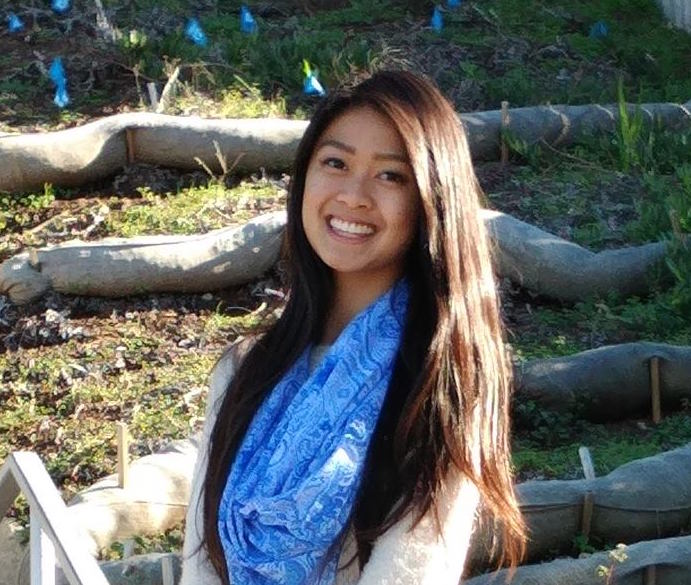
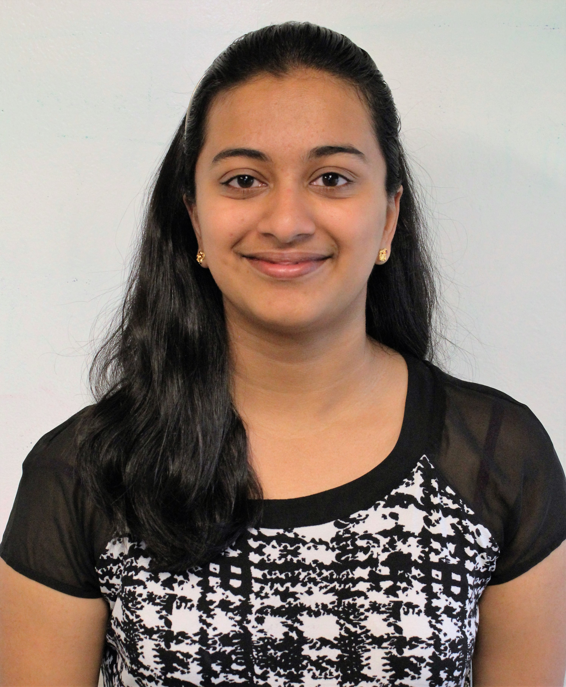
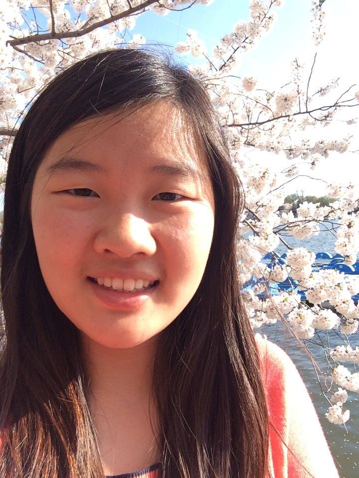
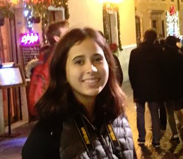

Kasey is currently a rising senior at UCLA studying Math-Econ and specializing in Computer Science. She is a Westview High School alumni and grew up in Rancho Penasquitos. By creating this camp, Kasey hopes to give girls an opportunity to learn about programming and the ability to find out early if programming is something they find interesting and want to persue in the future, an opportunity she never had. Her programming experience includes Math and Computer Science classes she completed at UCLA, as well as her expereience as Facebook intern during the summer of 2015 and 2016. It is Kasey's goal to work on the business side of an established technology company and to eventually start her own business.
Esther is a rising senior at UC Irvine studying Computer Science and Engineering. She is also a Westview alumni and is passionate about teaching programming to younger students. She is one of the original members of the SD Girls Coding Camp Team and is excited to help plan this year's event.
Brenda is a rising sophomore at Carnegie Mellon University (CMU), majoring in Computer Science and is another Westview Alumni. She is the co-founder of the Women in Computer Science (WICS) club at Westview and is very interested in Artificial Intelligence and spreading CS interest to younger audiences. She continues her involvement in college through her active participation in the Women@SCS club and SCS Day planning committee at CMU. Her experience as a teacher for the camp last year and intern at Northrop Grumman during her senior year of high school make her a valuable asset to the team. Brenda looks forward to an amazing summer as an intern at Microsoft and as a returning staff on the camp committee.
Baula Xu is a current rising sophomore at MIT studying computer science and engineering. As a Westview alum, she served as a founding member and Vice President of the school’s Women in Computer Science (WICS) Club. During her freshman year at MIT, she continued her involvement in various activities, becoming the Technology Officer for the Society of Women Engineers (SWE), the historian for the Association of Taiwanese Students (ATS), and a researcher in a civil and environmental engineering lab. This summer, Baula is excited to be an intern at Facebook, in addition to developing and teaching a java curriculum for girls a second time. In her free time, Baula enjoys hanging out with friends, singing bad karaoke, and traveling to new places.
Mattie is going to be a Junior at Westview High School. She is a member of the Women in Computer Science club at the school and the student coordinator for this camp. She thinks that computer science is a field of knowledge that everyone should learn and have access to. Her experience comes from the AP Computer Science class at Westview, participating in a hackathon, and creating an app through the Technovations Challenge. She is excited to be a part of this camp!